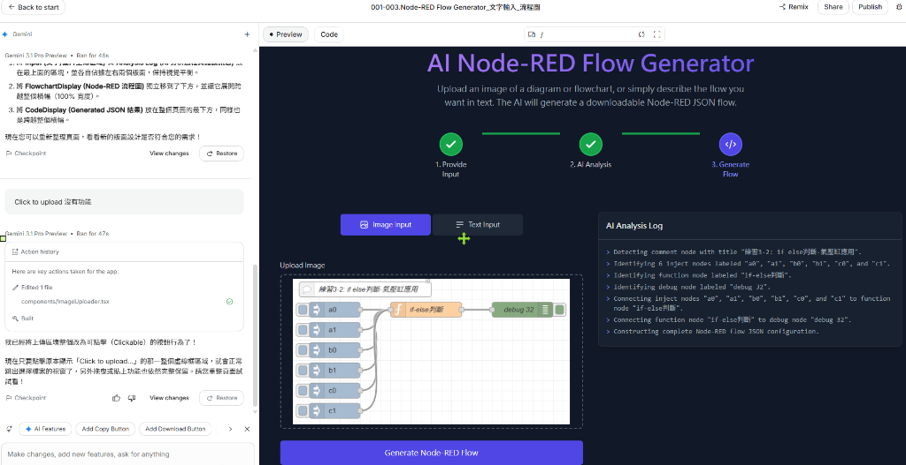

1
1. Provide Input
上傳截圖 / 輸入文字需求
2
2. AI Analysis
視覺解析節點與管線拓撲
3
3. Generate Flow
SVG 視覺化與 Node-RED JSON
1. Provide Input (選擇輸入來源)
快速載入實戰範例:
拖放或點擊上傳 Node-RED 流程截圖或手繪草圖
支援 PNG, JPG, WebP 格式

2. AI Analysis Log
Ready// 點擊「Generate Node-RED Flow」啟動 Gemini 視覺識別...
💡 系統就緒：支援自動識別 Comment, Inject, Function, Debug, Switch, MQTT 等標準 Node-RED 節點。